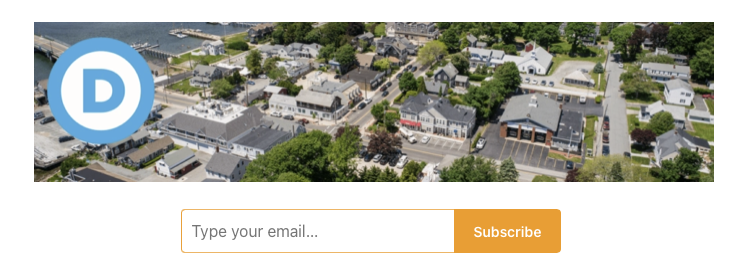

2023-06-02 08:00
While I am especially interested in national political and social issues, I also post things of interest to hometown progressives. And I have no plans to stop doing this. But I hope readers will seek out your local Democratic Party town or city committee for opportunities for engagement. You might be surprised. Or even pleasantly shocked.
It was once the case that up to 60% of all Massachusetts Democratic Town committees were either on life support or had passed away in their beds, leaving only a foul odor where they had once slumbered. Well, Trump changed all that.
If you are a New Bedford Democrat, or even an unenrolled liberal or progressive, get on Richard Drolet’s mailing list. Richard is the co-chair of the NB Dems and is known for both his tireless enthusiasm and his cookies.
If you live in Dartmouth, hats off to the Dartmouth Dems, who worked to get a new sheriff elected, fended off a rightwing crackpot in the School Committee elections, and have a new sense of mission. You can say “hi” tomorrow at the Dartmouth Dems table at NB Pride in Buttonwood Park. Or subscribe to their new online newsletter.

Speaking of which: Democrats across the state are signing up delegates NOW for the September Platform Convention in Lowell. Again, if you live in New Bedford, contact Richard Drolet.. If you live in Dartmouth, contact Jim Griffith or Susan LeClair at links found here.
*Long-time readers know I have many criticisms of both the national and state Democratic Party. Yesterday I voiced my displeasure that so few Democrats rejected negotiating with terrorists over the debt ceiling. But for the time being Democrats are about the only thing standing between us and the neo-fascism taking root in places like Florida.